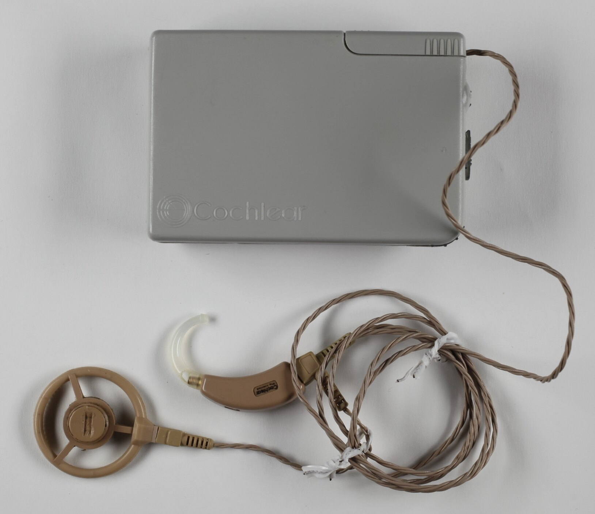
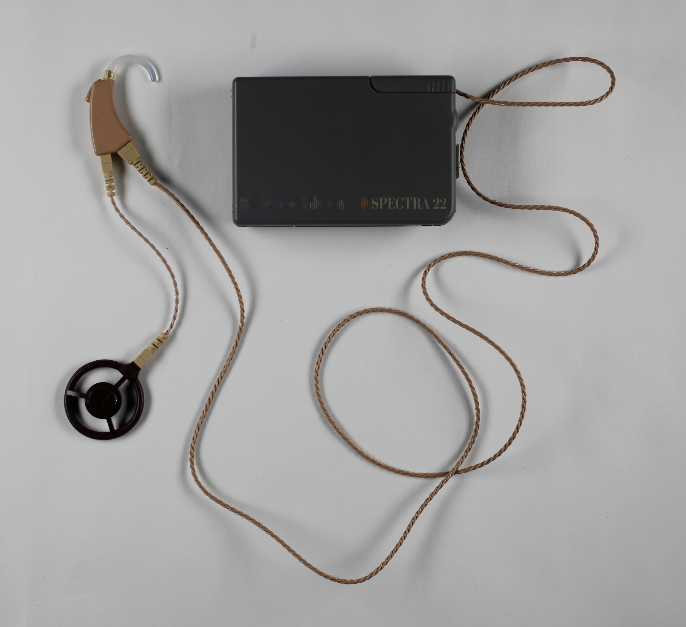

Cochlear Nucleus 22 / Mini Speech Processor
The machine that learns your brain's language for sound, then injects coded pulses straight into your auditory nerve

Overview
The Cochlear Nucleus 22 is the multi-channel cochlear implant system that grew out of Graeme Clark's research at the University of Melbourne and was commercialized by Cochlear Limited in Sydney. The FDA approved the Nucleus 22 for adults in 1985, making it the first widely used multi-channel implant. The 1989 "Mini Speech Processor" (MSP) was the body-worn digital-signal-processing successor to the earlier WSP, shrinking the hardware to a compact wearable unit.
The interaction model is the point, and it is genuinely strange: a computer that has learned to speak the brain's own language for sound. A microphone picks up acoustic energy; the digital speech processor analyzes it into frequency bands in real time; and the machine maps those bands onto a 22-electrode array surgically implanted in the scalae of the cochlea, firing coded electrical pulse trains directly into the auditory nerve. Both power and data cross the skin by a transcutaneous radio-frequency link. There is no loudspeaker and no earphone in the usual sense — the output channel is direct electrical stimulation of a cranial nerve. The wearer must re-train the brain to interpret the electrode patterns as speech, a slow and sometimes years-long re-wiring of perception.
This reverses the direction of every clinical interface the museum has. The P300 speller reads brainwaves; the IBVA digitizes EEG; the Kay Visi-Pitch measures vocal folds; the Fehmi system reads phase coherence. All of them pull signal out of the body. The cochlear implant pushes signal back in — a machine that has become a sense organ.
Deep dive
The collection reads the body in a dozen ways — EEG, EMG, GSR, vocal-fold impedance, electro-palatography. The cochlear implant does the opposite: it does not observe a signal and interpret it, it synthesizes a signal and injects it straight into the auditory nerve, gambling that the brain is plastic enough to learn to hear a pattern of electrical spikes as language. This is the museum's only example of a computer acting as an output sense organ rather than an input transducer.
The processor does not simply amplify sound. It analyzes the incoming acoustic spectrum and maps frequency bands to specific electrodes along the cochlea, so that the spatial arrangement of stimulation mimics the tonotopic layout of the normal inner ear. The "speech processing strategy" — the mapping algorithm that turns acoustic features into position-and-rate electrode patterns — is the real interface software, refined over years until users could understand speech well enough to use the telephone.
The 1989 Mini Speech Processor packs microphone, DSP, and radio-frequency transmitter into a compact unit, with the electrode array implanted in the inner ear. Power and data ride the same RF link through the skin — no connectors pierce the body. It is a prosthetic whose transducer is a living nerve, and whose software is a language taught to both the machine and the brain.
Media
